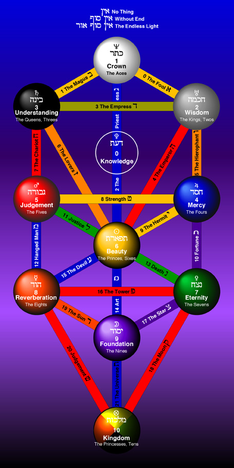

Path Reference
0: The Fool - Crown to Wisdom
1: The Magician - Crown to Understanding
2: The High Priestess - Crown to Knowledge
3: The Empress - Wisdom to Understanding
4: The Emperor - Wisdom to Mercy
5: The Hierophant - Wisdom to Knowledge
6: The Lovers - Understanding to Knowledge
7: The Chariot - Understanding to Judgement
8: Strength - Mercy to Judgement
9: The Hermit - Mercy to Beauty
10: Wheel of Fortune - Mercy to Knowledge
11: Justice - Knowledge to Beauty
12: The Hanged Man - Judgement to Beauty
13: Death - Beauty to Eternity
14: Temperance - Beauty to Foundation
15: The Devil - Beauty to Reverberation
16: The Tower - Judgement to Reverberation
17: The Star - Foundation to Eternity
18: The Moon - Foundation to Reverberation
19: The Sun - Reverberation to Kingdom
20: Judgement - Foundation to Kingdom
21: The World - Eternity to Kingdom